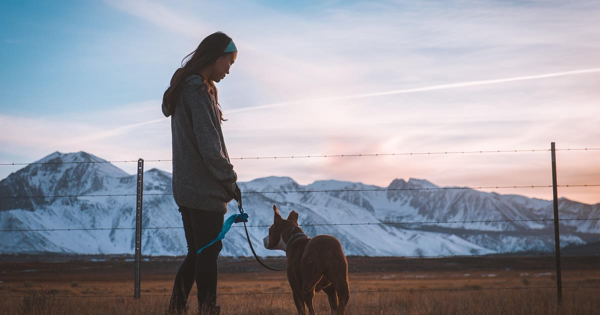

Cerca virtual (ou geofence) é o perímetro digital que você desenha ao redor de casa, quintal ou outra área segura no app da coleira GPS: quando o cão ultrapassa esse limite, o app dispara um alerta em tempo real no celular do tutor. Para cães com histórico de fuga, é esse recurso — mais do que preço ou design — que faz a diferença entre agir em minutos ou descobrir a fuga horas depois. Este guia mostra qual tipo de coleira GPS priorizar quando o cão foge, para que o alerta realmente funcione. O passo a passo de configuração, o tamanho ideal do perímetro e a diferença para a cerca sem fio estão no guia de cerca virtual para cachorro. Se antes você quer entender como a coleira GPS funciona em geral, comece por lá.
Modelos Bluetooth têm alcance curto — inúteis se o cão já está longe de casa quando você percebe a fuga; um cão correndo em velocidade normal pode sair do alcance do sinal em poucos segundos, segundo comparativo técnico do American Kennel Club. Para esse perfil, um modelo com chip de operadora, mesmo com mensalidade, tende a valer o investimento, porque a cobertura de rede móvel é o que garante localização mesmo a quilômetros de distância.
| Critério | Bluetooth | Chip de operadora |
|---|---|---|
| Alcance | Curto (poucos metros a dezenas de metros) | Cobertura de rede móvel, quilômetros |
| Ideal para | Fuga dentro de casa/quintal, área já conhecida | Cão que foge e sai do bairro/área conhecida |
| Custo recorrente | Geralmente sem mensalidade | Mensalidade de dados |
| Risco em fuga longa | Perde sinal rapidamente | Mantém localização a distância |
entenda a diferença técnica entre bluetooth e chip de operadora
Vale testar a configuração da cerca virtual antes de confiar nela — muitos alertas falham não pela tecnologia, mas por notificação desativada no celular ou perímetro mal desenhado (raio pequeno demais, pegando até a calçada em frente). Teste levando o cão (ou o próprio celular com a coleira) até a borda do perímetro combinado e confira se o alerta chega.
como configurar a cerca virtual para cachorro passo a passo
evite os erros mais comuns de configuração
Para cão que já fugiu antes, uma coleira com chip 4G próprio — e não só Bluetooth — é o que garante que a cerca virtual continue funcionando mesmo quando o cão já saiu do alcance do Wi-Fi de casa. A The Pet GPS é um exemplo desse perfil: rastreamento 4G com 1 ano de conectividade já incluso no preço (sem precisar contratar plano de dados separado no primeiro ano), localização em tempo real pelo celular e configuração de cerca virtual pelo próprio app. No Mercado Livre, o modelo aparece entre os mais vendidos da categoria, com nota 5,0 nas avaliações de quem já comprou.
Esse tipo de solução com conectividade inclusa reduz a principal fricção da cerca virtual via chip: lembrar de pagar mensalidade separada todo mês para o alerta continuar ativo.
Porte pequeno não significa menor tendência a fugir — o comportamento está mais ligado a temperamento e estímulo do que a tamanho. Se o seu cão é pequeno e foge, equilibre o recurso de cobertura ampla com o peso leve do dispositivo.
cães pequenos também fogem — o que considerar
A coleira GPS avisa depois que o cão já fugiu — ela não impede a fuga em si. Para reduzir a frequência das ocorrências, vale combinar o rastreamento com uma barreira física no quintal ou área externa, especialmente em horários sem supervisão direta.
cercado para cachorros: vale a pena como barreira física?
Fuga recorrente também pode ter causas comportamentais — ansiedade de separação, falta de estímulo físico e mental, ou período de cio — que a coleira GPS não resolve sozinha, apenas ajuda a localizar o cão depois que ele já fugiu. Segundo a Royal Canin, o hiper apego ao tutor é condição central para o surgimento da ansiedade de separação, e cães em lares com apenas uma pessoa têm cerca de 2,5 vezes mais chance de desenvolvê-la — reforçando que a causa raiz costuma ser comportamental (consultado em 12/10/2026). Se as fugas são muito frequentes ou o cão demonstra sinais de sofrimento associados a elas, vale conversar com um adestrador ou veterinário comportamental para investigar a causa, além da solução tecnológica.
Cerca virtual (geofence) é um perímetro digital que você desenha no app da coleira GPS ao redor de casa, quintal ou outra área segura. Quando o cão ultrapassa esse limite, o app dispara um alerta em tempo real para o celular do tutor, permitindo agir em minutos em vez de descobrir a fuga horas depois.
Priorize cobertura de rede confiável e cerca virtual eficaz, não preço ou design. Modelos com chip de operadora, mesmo com mensalidade, tendem a valer o investimento, já que a cobertura móvel garante localização mesmo a quilômetros de distância.
Sim. É o recurso que faz a diferença entre agir em minutos ou descobrir a fuga horas depois. Vale testar a configuração antes de confiar nela, já que muitos alertas falham por notificação desativada ou perímetro mal desenhado.
Sim. Porte pequeno não significa menor tendência a fugir — o comportamento está mais ligado a temperamento e estímulo do que a tamanho. Nesse caso, equilibre cobertura ampla com o peso leve do dispositivo.
Não sozinha. Fuga recorrente pode ter causas comportamentais, como ansiedade de separação ou falta de estímulo, que a coleira não resolve — ela apenas ajuda a localizar o cão depois que ele já fugiu. Fugas muito frequentes merecem avaliação de um profissional.
A cerca virtual é o recurso que transforma a coleira GPS de "achar o cão depois" em "ser avisado na hora". Para que o alerta funcione de verdade fora do alcance do Wi-Fi de casa, priorize um modelo com chip próprio (4G ou NB-IoT) e teste o perímetro configurado antes de confiar nele. A coleira GPS resolve a parte de "encontrar rápido" — mas se a fuga é recorrente, vale investigar também a causa comportamental por trás dela. Um cão que sai de casa com frequência também fica mais exposto a pulgas e carrapatos; vale conferir se a coleira antiparasitária Seresto vale a pena como proteção complementar.
volte ao guia completo de coleira GPS para pet
Se o fujão de casa é um gato, não um cachorro, veja Qual a Melhor Coleira GPS para Gato: Comparação por Tecnologia.
Se cobertura de rede é prioridade, mas você quer evitar mensalidade, veja melhor coleira GPS sem mensalidade: como escolher a sua.
Em dúvida se o problema é fuga ou comportamento estranho dentro de casa? Veja câmera pet ou coleira GPS: qual escolher.
Escrito por Nildo Alves para o Smart Pet Gadgets. Veja nossa política editorial e como verificamos as fontes citadas neste artigo.
🐾 Confira o preço e a disponibilidade atual no Mercado Livre.
Ver no Mercado LivreLink de afiliado: podemos receber uma comissão por compras feitas através deste link, sem custo adicional para você.
Nildo Alves — tutor de pets e curador de produtos no Smart Pet Gadgets. Pesquisa especificações de fabricante, dados de mercado e fontes veterinárias publicadas por terceiros para ajudar outros tutores a escolher melhor.
Sobre o Smart Pet Gadgets · Contato · Política editorial e de afiliados